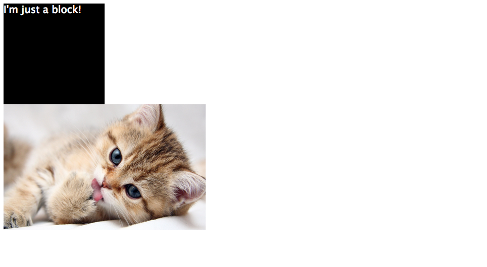
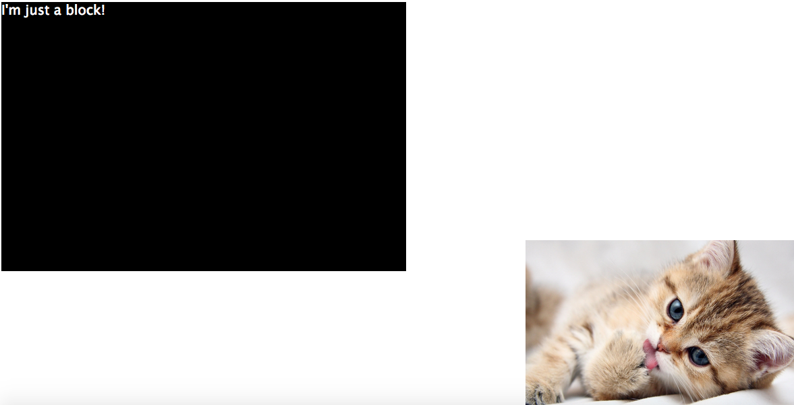
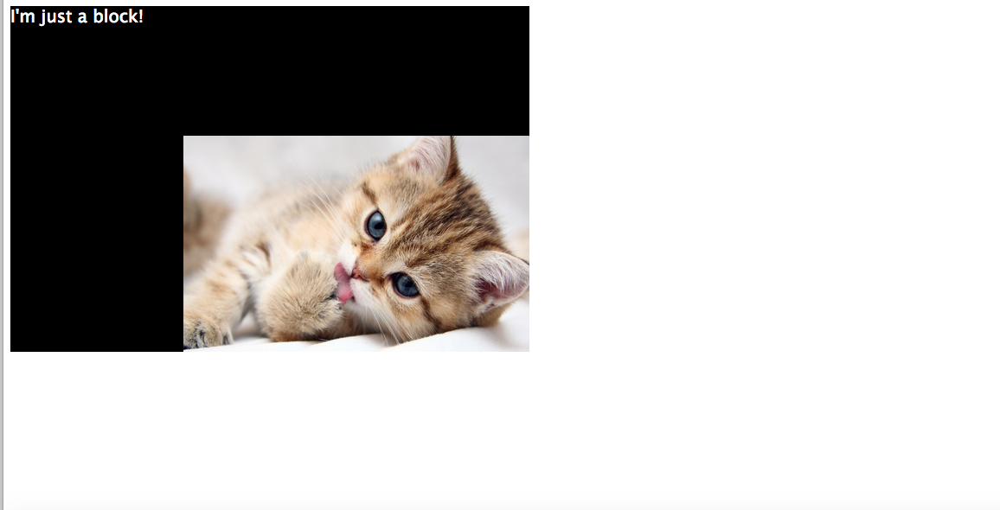
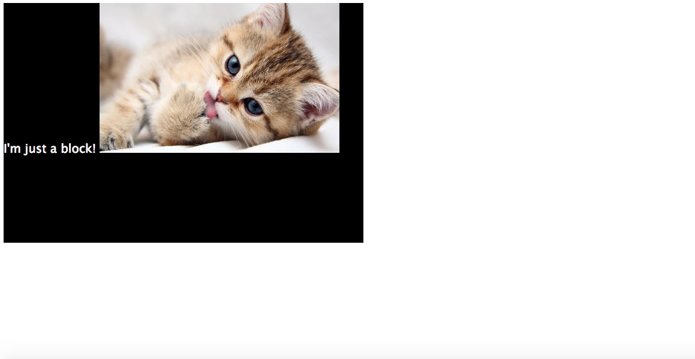
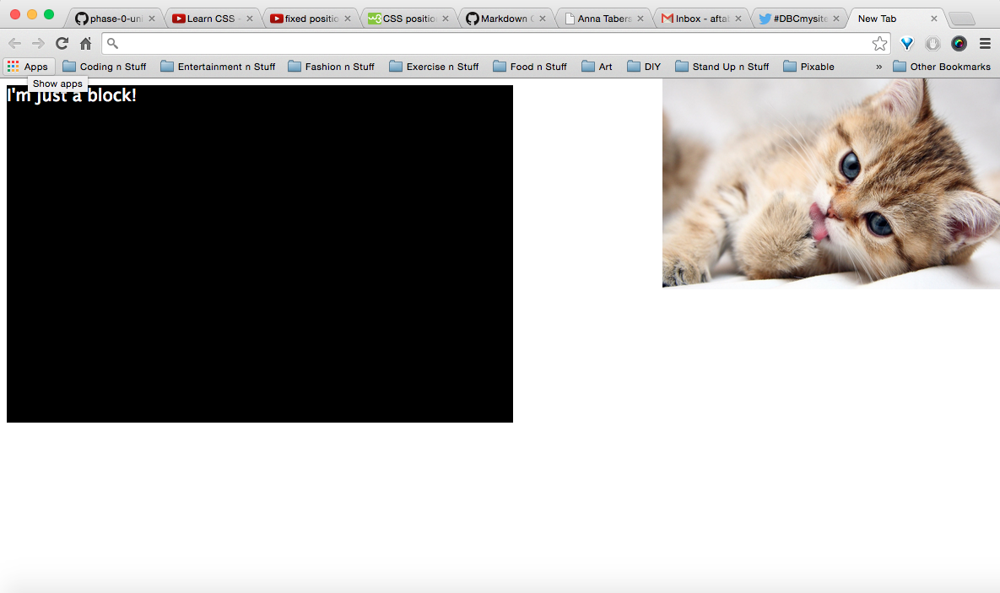
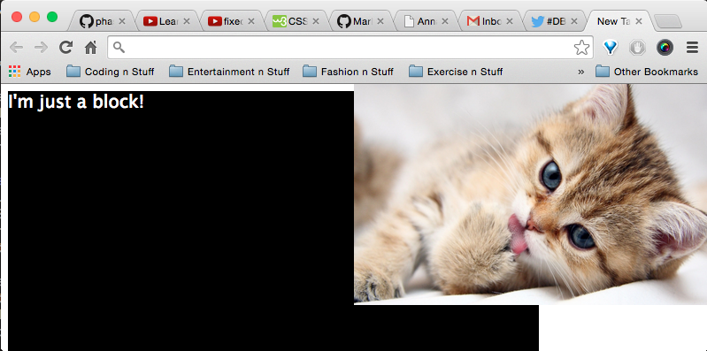

What's Your Position On That?
NOVEMBER 9, 2014
This week I ran into a bit of a problem. When I was working on the Berkshire Hathaway CSS challenge, it felt like I had NO control over my blocks. They were just moving all over the page doing whatever they felt like doing. But hey! I'm the boss! I won't let some silly blocks run my site! So I did a little research about blocks and how to master them.
Absolute
According to w3schools, the absolute positioned element is positioned relative to its first (non-static) ancestor element. I find it most helpful to see the difference using images, so let's check it out
This is an image of just two blocks. Just a <div></div> and an <img/>
Now we set the kitten image to "position:absolute" with "bottom:0; right:0"
Pretty cool, but now it's at the corner of the browser. What if we want it inside of the <div> block? Well first we edit our html so it says <div> <img/> </div>
Here's where I started to feel like I was mastering the blocks a little. I watched this YouTube video and learned a little trick
Tip for Absolute Positioning!: If you make the container element (in this case <div>), "position:relative" and keep the kitten as "position:absolute; bottom:0; right:0", the kitten image will align with the bottom right corner of the <div> like this:
Relative
Relative positioning means the element is positioned relative to it's current position
For example, here the kitten image is set as "position:relative"
Now that it's relative, we have the power to push and pull it from the top, bottom, left and right! Here is the kitten with "top:100px". See how it pushed it down 100px from the top?

Fixed
Fixed positioning positions the element in relation to the browser window.
Here is the kitten as "position:fixed; top:0; right:0;
It's good to note that the positioning remains in relation to the browser window even when you shrink it like this:
This is definitely not ideal for a lot of situations. However, what if you want your header to be visible even when the user scrolls down? FIXED POSITIONING! It definitely has it's uses.